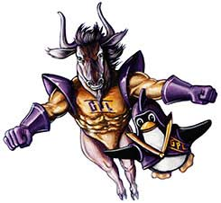

GNU ed il Software Libero
Richard M. Stallman ha fondato la Free Software Foundation nell'ottobre del 1985 per diffondere l'uso e la conoscenza del Software Libero ed assistere gli aspetti amministrativi, legali e organizzativi del progetto GNU.
Il progetto GNU è stato lanciato nel 1983 da Stallman per creare un sistema operativo completo, che fosse software libero. Oggi abbiamo diversi sistemi operativi liberi che rispettano la libertà degli utenti, dando a tutti il diritto di usare, studiare, condividere e migliorare il software per qualsiasi scopo.
Il nome del progetto GNU deriva dall'acronimo ricorsivo "GNU Non è Unix". Unix era un sistema operativo molto popolare negli anni '80, così Stallman progettò GNU in modo da essere compatibile con Unix in modo da rendere conveniente per le persone migrare verso GNU.
GNU è modulare. Ciò significa che i componenti di terze parti possono essere inseriti in GNU. Oggi, è molto comune utilizzare la combinazione di un kernel di terze parti chiamato Linux con sistemi GNU. Molti usano il nome "Linux" per questa variante di GNU, ma questo distrae l'attenzione dal progetto GNU ed il suo obiettivo di libertà del software. Usa il termine "GNU / Linux" o "GNU + Linux" per indicare questi sistemi.